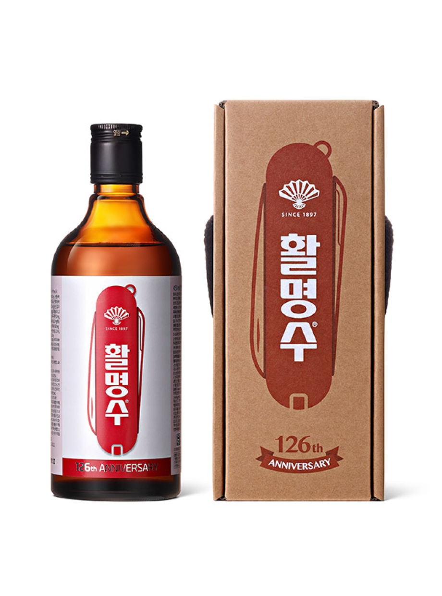

Date : 2023-06-08
활명수 126주년 기념판
‘빅토리녹스와 콜라보레이션’
1897년생 동갑내기 ‘활명수’와 ‘빅토리녹스’
‘생명을 살리는 물’ 캠페인의 일환으로 판매수익금 전액 대한적십자사를 통해 세계 물부족 국가에 기부

우리회사가 창립 126주년을 맞아 스위스 대표 브랜드 ‘빅토리녹스’와 협업한 활명수 기념판을 출시했다고 8일 밝혔다.
활명수 126주년 기념판은 맥가이버칼로 흔히 알려진 빅토리녹스의 시그니처 제품인 ‘스위스 아미 나이프(Swiss Army Knife)’ 이미지를 활용했다. 라벨에는 활명수 브랜드를 만능 툴에 담아 ‘무엇이든 소화해 낸다’라는 의미를 담았으며, 패키지는 실제 멀티 툴을 연상시키는 형태로 제작했다.
이번 협업은 오랜 세대를 거쳐 ‘생명을 살리는 물’로서 신뢰를 쌓아온 ‘활명수(活命水)’와 세계적인 기술력과 인지도를 바탕으로 성장해온 빅토리녹스가 만났다는 점에서 의미가 있다. 최고의 품질, 혁신적인 디자인으로 많은 사랑을 받고 있는 스위스 아미 나이프는 1897년 칼 엘스너가 개발한 ‘오피서와 스포츠 나이프’가 특허를 취득하면서 시작됐다. 두 제품 모두 각자의 분야에서 오래된 헤리티지로 상징적인 의미를 가진 제품들이다.
우리회사는 1897년 제품 발매 당시 급체, 토사곽란 등으로 목숨을 잃는 사람이 많았던 시절에 활명수(살릴 活, 생명 命, 물 水)라는 이름의 뜻 그대로 민중들의 ‘생명을 살리는 물’ 역할을 해온 활명수의 가치와 철학을 잇고자, 전 세계 물 부족 국가 어린이들을 돕기 위한 ‘생명을 살리는 물’ 캠페인을 이어가고 있다.
현재까지 출시된 활명수 기념판의 판매수익금을 ‘생명을 살리는 물’ 캠페인의 일환으로 유니세프 한국위원회, 초록우산어린이재단에 기부해 왔으며, 활명수 126주년 기념판의 판매수익금 또한 사회공헌활동에 기부될 예정이다. 작년 발매된 125주년 기념판의 판매수익금은 대한적십자사를 통해 네팔 산쿠와사바아 지역에 수도·위생 시설 구축 및 개선, 지역주민 대상 보건위생 교육과 캠페인 활동 지원에 쓰였다.
동화약품 관계자는 “이번 협업은 1897년 같은 해에 태어나 오랜 세대를 거쳐 사랑받아온 동갑내기 브랜드의 만남이라는 점에서 의미가 있다”라며 “앞으로도 동화약품은 다양한 분야와의 신선한 접목을 통해 소비자와 소통해 나갈 예정이며 활명수의 ‘생명을 살리는 물’ 정신을 바탕으로 한 지속적인 나눔 실천도 이어갈 것”이라고 전했다.
이번 활명수 126주년 기념판은 450ml의 대용량 제품으로 약국에서 구입할 수 있다.
한편, 우리회사는 지난 2013년, 활명수 116주년 기념판을 시작으로 카카오프렌즈, 힙합 서바이벌 프로그램 쇼미더머니, 패션브랜드 게스, 글로벌 스포츠 브랜드 휠라(FILA) 등과의 콜라보레이션을 통해 새로운 활명수 기념판을 매년 출시하여 ‘생명을 살리는 물’ 캠페인을 지속적으로 전개하고 있다. 지난해에는 100년 이상의 역사를 지닌 글로벌 아웃도어 브랜드 ‘스탠리(STANLEY)’와의 협업을 통해 활명수 125주년 기념판을 출시한 바 있다.